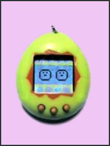

SECRET CODES |
 |
Please note, the only code which I know works is the test screen code. I have never heard of anyone who has got the other codes to work, but I post them here because people want to at least try them for themselves. If anyone ever does find a working code, please e-mail me and tell the rest of the world!
Test screen codes -
(Warning - this will reset your tamagotchi, so it's best to try this after your tam has left and turned into an angel.) Press the 'a' button and hold it down while pressing the reset button. Hold for three seconds. Then press the 'b' button and then the 'c' button. You should see screens with a checker board-like pattern. It is thought that this screen is used by the manufacturers to check that the pixels are working correctly.
Twins code -
When your tamagotchi is an angel, press and hold all three buttons. After the beep, let go of buttons 'b' and 'c'. While holding 'a', press reset. Hold 'a', and you should get two eggs to hatch.
Triplets code -
You must have previously had twins for this to work. While you twins are flying away, press 'a', then 'c', then 'a' again, and press reset.
Four tams code -
You must have previously had triplets for this to work. While your triplets are flying away, press 'a', then 'c', then 'a' and 'b' together. Press reset.
Five tams code -
While your four tams are flying away, press all three buttons together, then press reset, then let go of 'c', then 'a', then finally let go of 'b'.
Gender Code -
As soon as your tam is born, push 'a' and 'c', 'b', 'a', then 'c' and your tam will tell you what gender it is.